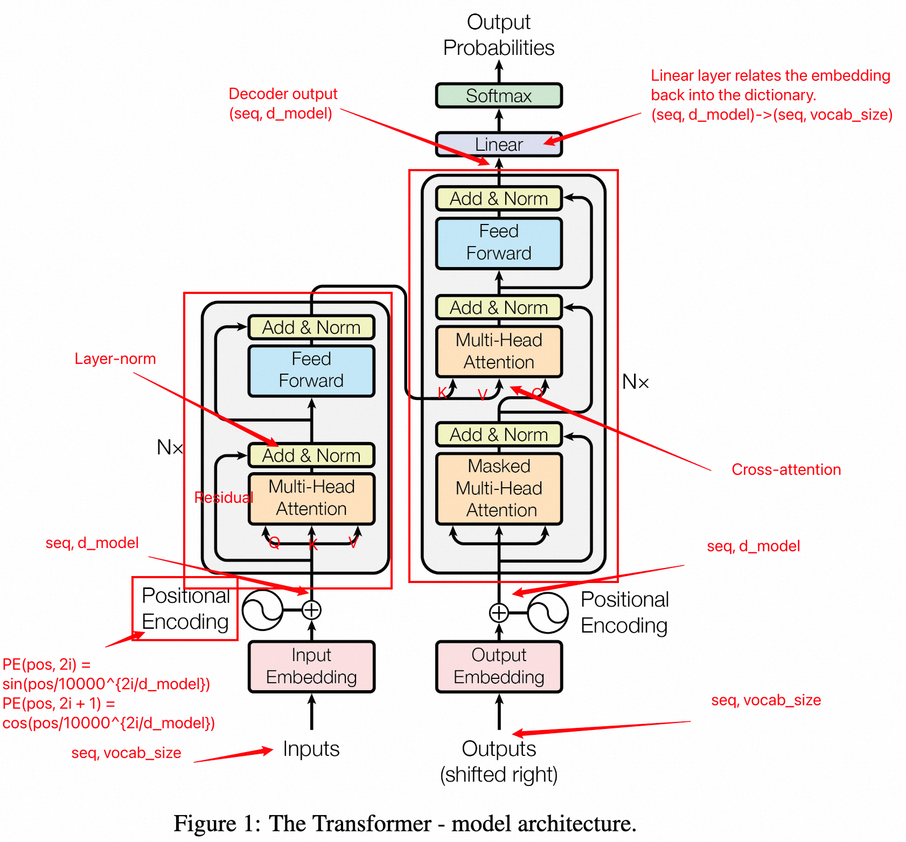
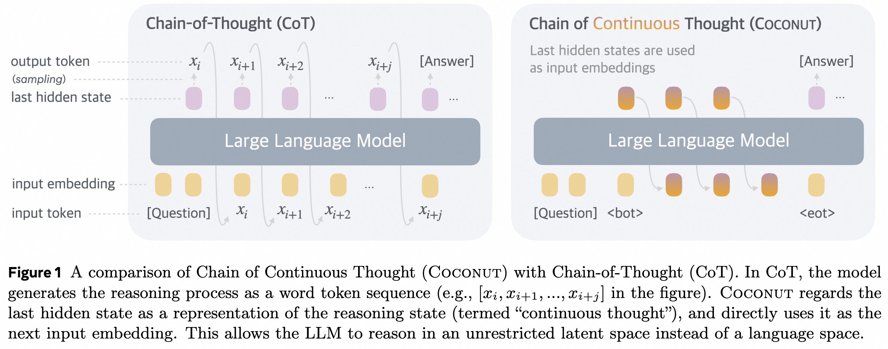
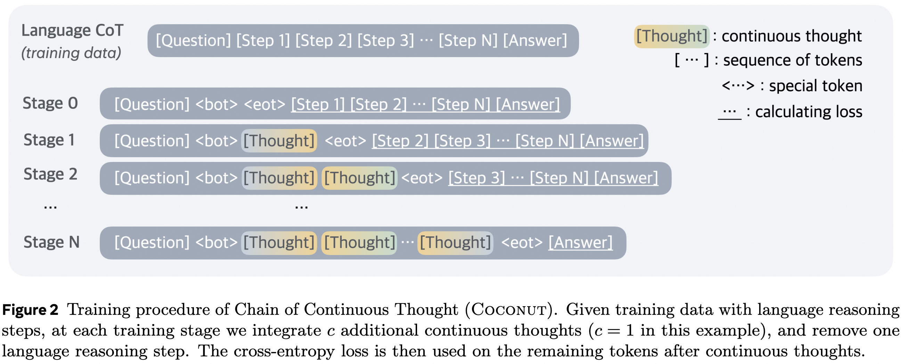
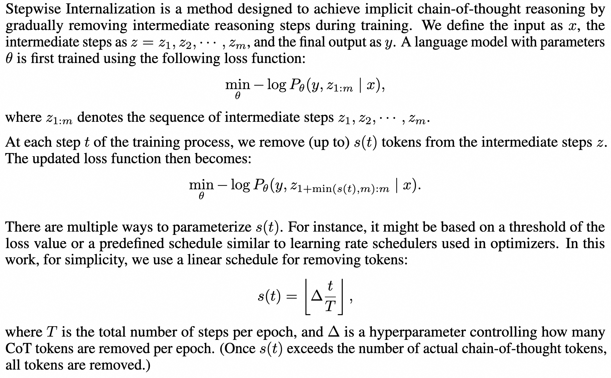
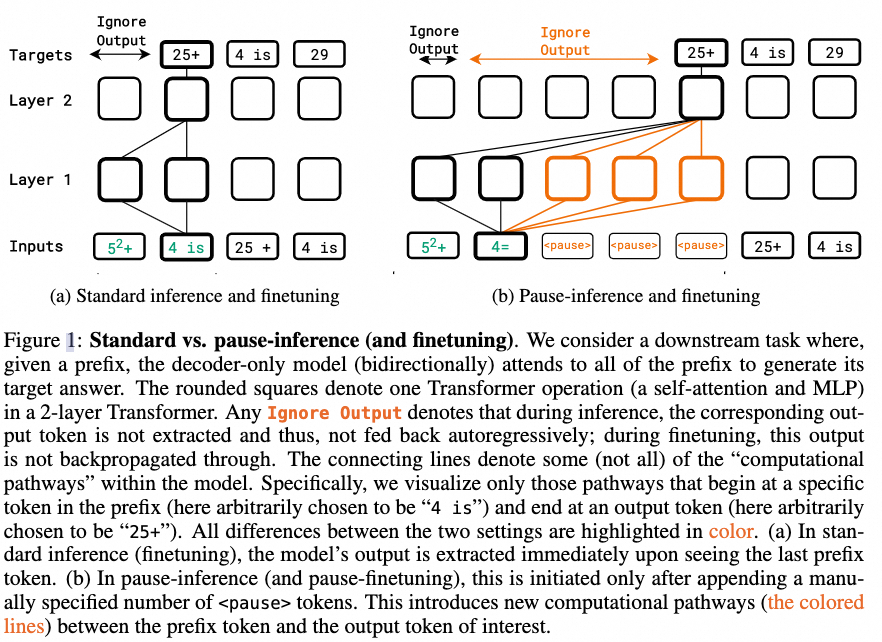

Reading Notes
Latent Space: From Continuous Reasoning to Representation Analysis
A guided reading of how language models can move computation beyond explicit tokens—and how we can inspect, train, and evaluate what happens there.
What would reasoning look like if a model did not have to translate every intermediate step into human language? The seven papers below do not offer a single answer. Instead, they map a design space: where hidden computation can occur, how it can be learned, and what evidence is needed before we call it reasoning.
Preliminaries: how a model produces the next token
To understand latent-space reasoning, it helps to separate three objects: the embedding of an input token, the hidden state computed inside the Transformer, and the next-token distribution produced by a linear layer and softmax. In standard autoregressive generation, the model predicts a token and embeds it again as the next input. Latent-reasoning methods intervene in this loop, allowing some computation to continue before it is forced back through the vocabulary.

A minimal cross-entropy example
Suppose the vocabulary is [cat, dog, fish], the correct next word is cat, and the logits are [2.0, 1.0, -1.0]. Softmax converts them into approximately [0.70, 0.26, 0.04]:
Because the target is one-hot, cross-entropy reduces to the negative log probability of the correct word:
The methods below change what happens between input and output, but their latent computation is still trained through a downstream differentiable objective such as token prediction.
Paper 1
Training Large Language Models to Reason in a Continuous Latent Space
TL;DR. Coconut avoids compressing every intermediate reasoning step into a natural-language token. During latent mode, it feeds the previous step's final hidden state directly back as the next input embedding.

<bot> and <eot>.Human language is optimized for communication, but it may not be the best interface for a model's internal computation. A standard language model repeatedly projects a hidden state into vocabulary space, produces a token, and maps that token back into an embedding. Coconut changes this loop during latent mode by feeding the final hidden state back directly.
A continuous state does not have to correspond to a readable word, so it can represent several potential next steps at once. The authors argue that this produces a form of breadth-first exploration: rather than committing immediately to one verbalized path, the model can preserve multiple possibilities in a single representation.

If a training stage schedules \(n\) latent thoughts, it requires \(n+1\) forward passes: the first \(n\) compute successive continuous states, and the final pass evaluates the remaining text. Coconut therefore trades additional sequential computation for a reasoning channel that is not restricted to vocabulary items.
Paper 2
From Explicit CoT to Implicit CoT: Learning to Internalize CoT Step by Step
TL;DR. During training, explicit reasoning tokens are removed in stages, encouraging the model to internalize the computation that was previously written out.

This approach shares Coconut's goal of reducing dependence on visible language reasoning, but its mechanism is different. Coconut creates an explicit recurrent loop over continuous states. Stepwise internalization uses a curriculum that gradually withdraws the language scaffold already present in the training data. The network is asked to absorb the computation formerly carried by the removed steps.
Success therefore means more than making chain-of-thought text disappear. The shorter computation must retain task performance and generalize beyond the training regime. Any efficiency gain also comes with a clear cost: once the intermediate steps are internalized, they become harder to inspect and supervise.
Paper 3
Implicit Chain of Thought Reasoning via Knowledge Distillation
TL;DR. The method first trains a student to consume the hidden states produced by a reasoning teacher. It then trains an emulator to predict those states directly from the input and couples the emulator to the student.

- Mind-Reading the Teacher: the student learns to use the teacher's intermediate hidden states to predict the answer.
- Thought Emulation: an emulator sees only the problem and learns to predict those teacher states.
- Couple and Optimize: predicted states replace the teacher states, and the combined student system is fine-tuned end to end.
The intended shift is from horizontal reasoning across an explicit token sequence to vertical computation across model layers. The teacher supplies an interpretable training scaffold, but the deployed student no longer needs to generate the scaffold itself.
Why mean squared error may be insufficient
A problem can have several valid reasoning paths. For example, \(30+25\) and \(25+30\) produce the same answer but may correspond to different intermediate representations. If a single target is fitted with mean squared error, the emulator tends toward their average:
That average may not lie on any valid reasoning trajectory. A mixture distribution is more appropriate because different components can represent different paths:
The broader lesson is that a multimodal reasoning target cannot be represented faithfully by a single mean. Preserving several plausible trajectories is therefore both a motivation for Coconut and a statistical challenge for distilling hidden reasoning.
Paper 4
Do Large Language Models Latently Perform Multi-Hop Reasoning?
TL;DR. The paper combines internal entity recall with output-distribution consistency to test whether a model completes two-hop factual reasoning without being given the bridge entity explicitly.
Two-hop prompt: Who is the mother of the performer of “Superstition”?
Bridge entity: Stevie Wonder
One-hop control: Who is Stevie Wonder's mother?
The first hop is measured with an internal entity-recall score, EntRec. Hidden states at selected layers are projected into vocabulary space, and the probability of the bridge entity's first token is measured. Entity and relation replacements serve as interventions: if replacing the song or the performer relation reduces recall of “Stevie Wonder,” the internal signal is linked to the first-hop relation in the prompt.
The second hop uses a consistency score, CnstScore, to compare the output distributions of the two-hop and one-hop questions. If increasing recall of the bridge entity makes those distributions more consistent, it provides causal evidence that the model uses the entity in later computation. This distinction is essential: decoding an entity from a hidden state does not, by itself, show that the model relies on it.
Paper 5
Patchscopes: A Unifying Framework for Inspecting Hidden Representations of Language Models
TL;DR. Patch a hidden state from a source prompt into a carefully designed target prompt, then use the model's continuation to expose information carried by that representation.
Let \(h_i^\ell\) be the representation at position \(i\) and layer \(\ell\) in a source model \(M\). A patching operation replaces the target model's state at position \(i^*\) and layer \(\ell^*\):
The mapping \(f\) may be the identity, or it may be a learned linear or nonlinear transformation between representation spaces. After the replacement, computation resumes from the target layer. The resulting continuation reveals what information the patched state can make available under that target prompt.
What is encoded in a “CEO” representation?
Suppose the source prompt is The CEO of the company is. A target prompt supplies repetition demonstrations such as tok1 → tok1; tok2 → tok2; ?. If patching the source representation for “CEO” at the question-mark position leads to CEO → Chief Executive Officer, then the state contains semantic information that this target prompt can read out.
Patchscopes can also inspect multi-hop reasoning. We can test where “Visual Basic → Microsoft” and “Microsoft → Satya Nadella” emerge across layers and whether later computation uses them. The framework combines probing, intervention, and natural-language readout in one procedure. Its explanations are still prompt-dependent, however: a successful readout is evidence that information is accessible, not that the representation has one uniquely correct verbal interpretation.
Two extensions: allocating more computation and aggregating more models
The final two papers sit at different levels of abstraction. Pause tokens add computation inside a single model before it answers. Mixture-of-Agents adds computation at the system level by combining outputs from multiple models. Neither is identical to continuous latent reasoning, but both broaden the question from what the model says to where additional computation should happen.
Paper 6
Think before you speak: Training Language Models With Pause Tokens
This method appends a sequence of learnable pause tokens to the input during both training and inference. The model gains additional sequential computation before it must produce an answer. Unlike Coconut, a pause token remains an explicit discrete placeholder: it does not express human-readable reasoning, but it creates additional computational depth.

Paper 7
Mixture-of-Agents Enhances Large Language Model Capabilities
Mixture-of-Agents organizes several language models into layers. Models at each layer read candidate responses from the previous layer and pass new syntheses forward. Across AlpacaEval 2.0, Arena-Hard, MT-Bench, and FLASK, the study highlights the value of model diversity: aggregation can improve the final response even when the participating models have unequal capabilities.
A unifying view
Together, these papers organize the area around three connected questions:
- Where does computation happen? It may unfold in explicit reasoning tokens, extra pause positions, recurrent hidden states, or a multi-model aggregation pipeline.
- How is it learned? The main strategies include curriculum-based internalization, end-to-end backpropagation through continuous states, and distillation from a teacher's hidden trajectory.
- What counts as evidence? Final accuracy is not enough. Internal recall, causal interventions, and representation patching probe whether the proposed intermediate mechanism is present and behaviorally relevant.
The appeal of latent-space reasoning is therefore not merely that it can generate fewer chain-of-thought tokens. It offers a machine-native channel whose states need not collapse into one word at every step. Yet that freedom creates a corresponding obligation: the less reasoning is expressed in language, the stronger our methods for supervising, intervening on, and evaluating hidden computation must become.
Sources
- Training Large Language Models to Reason in a Continuous Latent Space.
- From Explicit CoT to Implicit CoT.
- Implicit Chain of Thought Reasoning via Knowledge Distillation.
- Do Large Language Models Latently Perform Multi-Hop Reasoning?.
- Patchscopes; Pause Tokens; Mixture-of-Agents.
- Original reading notes in Notion.
This article consolidates repeated passages from the original notes while preserving their main examples, equations, and conclusions. Figures reproduced in the notes come from the cited papers and are included here for study and commentary.
Read ... times